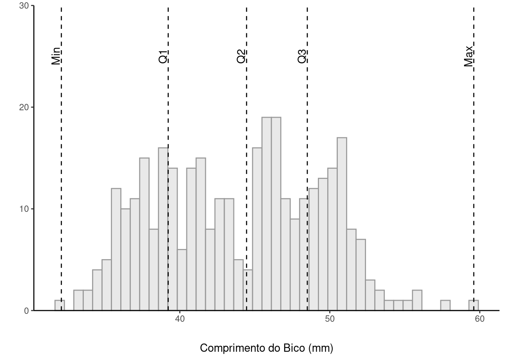
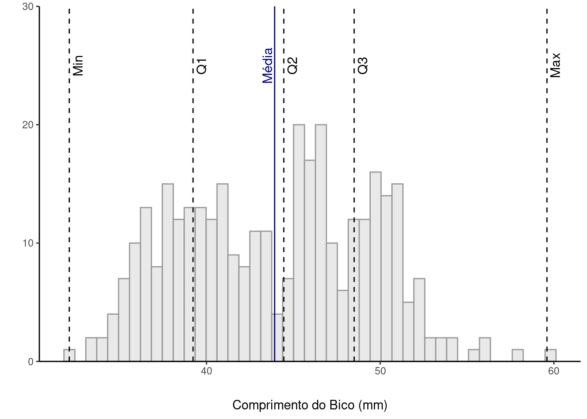
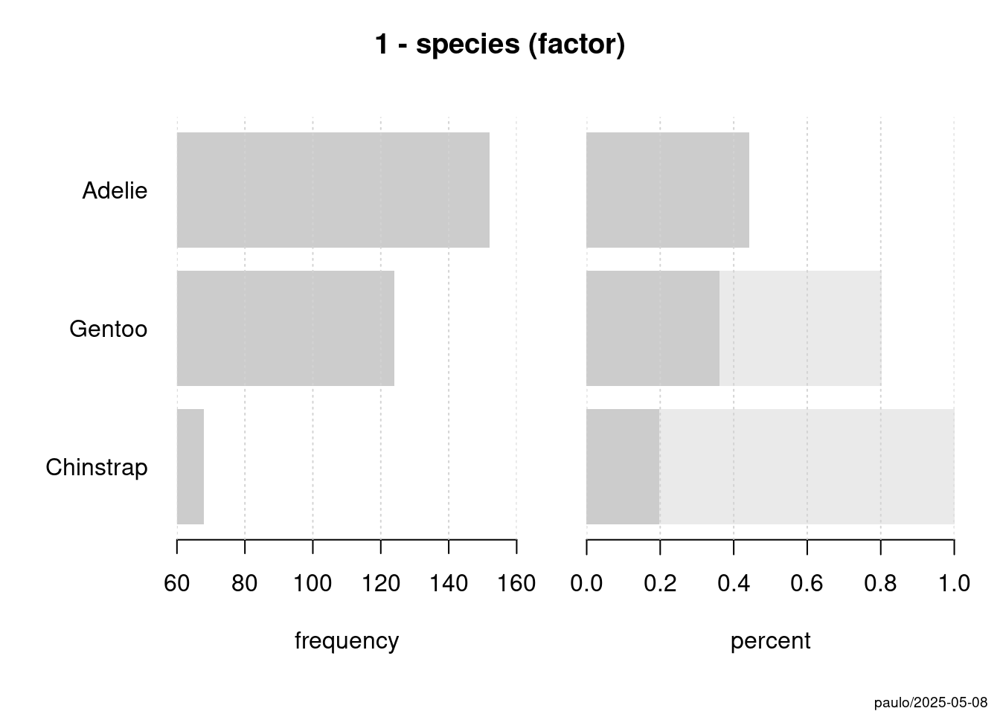
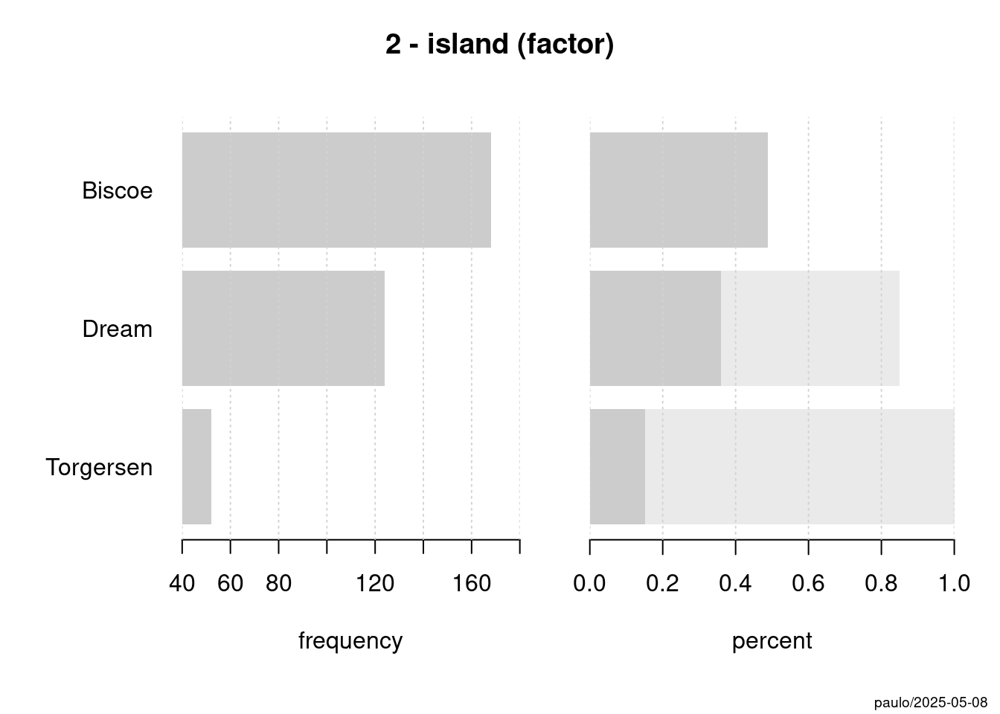
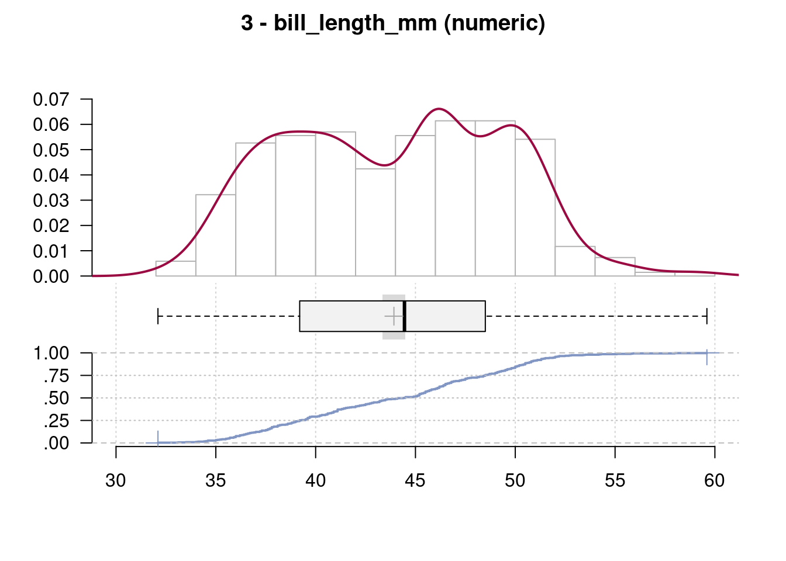
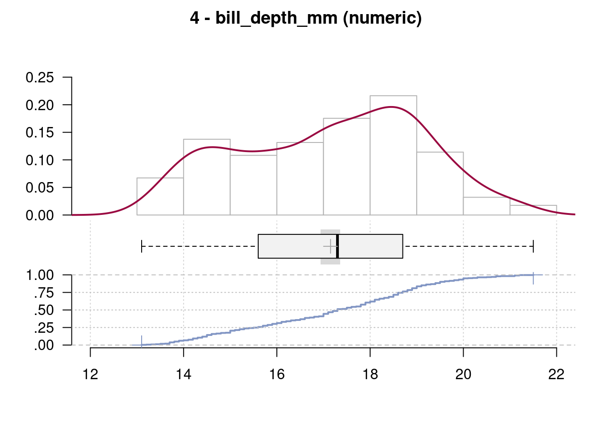
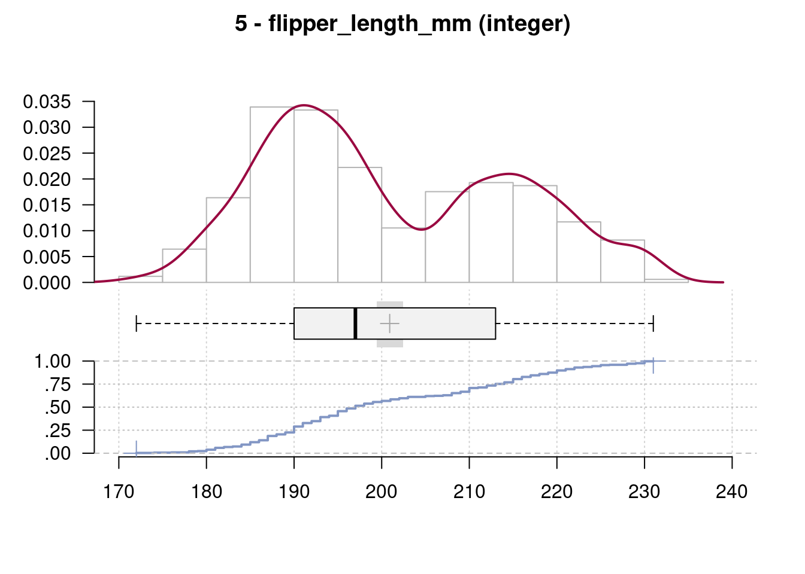
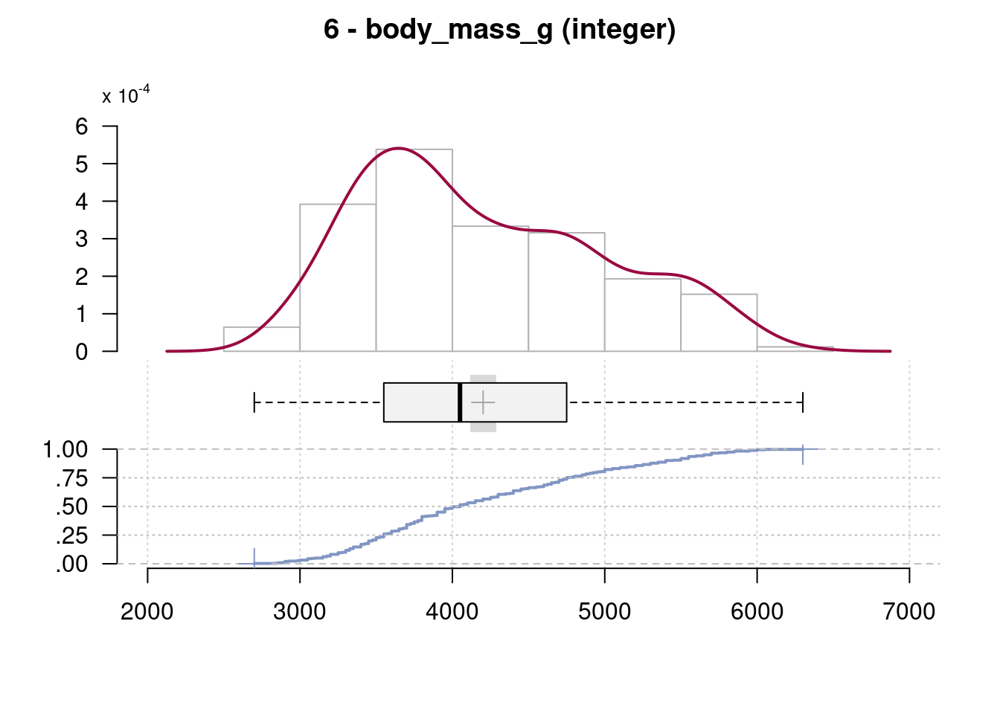
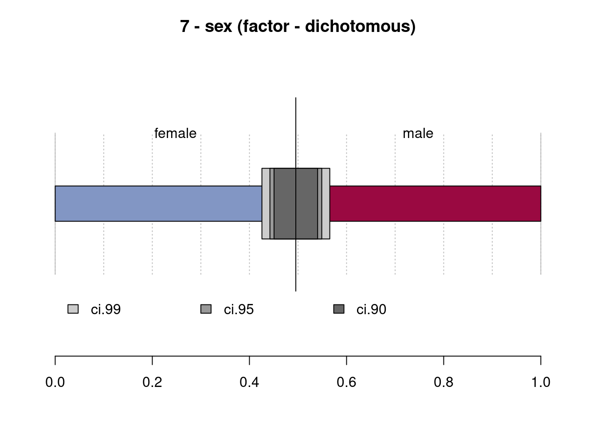
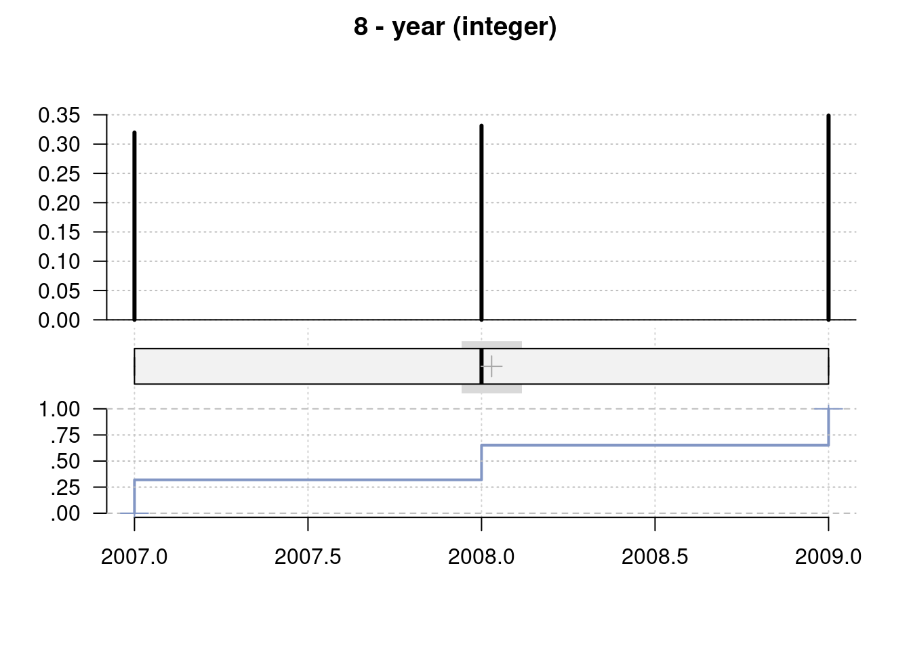

Estatísticas Descritivas
![]()
Uma parte crucial em todo fluxo de análise de dados é o que chamamos de Análise Exploratória dos Dados, ou EDA (Exploratory Data Analysis). Essa é uma etapa fundamental que se feita corretamente evita dores de cabeça futuras na hora das análises ou modelagem.
Parte da EDA, as Estatísticas Descritivas são obrigatórias e nos ajudam a descrever, como o próprio nome já indica, a natureza dos nossos dados. Nesta sessão vamos conhecer funções nativas do R para o cálculo de estatísticas descritivas, bem como alguns pacotes que são muito úteis e facilitam bastante a vida.
1 Pacotes
Nesta sessão utilizaremos três pacotes novos, o rstatix, pastecs e DescTools, todos com funções muito úteis para EDA. Você pode instalar os pacotes rodando o código abaixo:
Vimos na seção de introdução que podemos usar library() para carregar um pacote, é como temos feito com o tidyverse até então por exemplo. Mas existem ocasiões nas quais não queremos ter acesso a todo o pacote, e sim a algumas funções específicas. Para isso, para evitar utilizar memória desnecessária, ao inves de carregar o pacote, podemos fazer a invocação da função diretamente com nome_do_pacote::função. Veremos isso na prática nesta sessão.
2 Medidas de Posição
Medidas de posição (ou medidas de tendência central) descrevem brevemente a localização dos dados na reta dos números reais. Elas indicam um ponto central em torno do qual os dados tendem a se agrupar. As medidas de posição mais importantes são a média e a mediana (Oleksy, 2018).
2.1 Média Aritmética
A média aritmética é a medida de posição mais comum. Se \(n\) é o número de observações de \(x_i\), com \(i=1\), definimos a média como:
\[\Large \bar{x} = \frac{1}{n} \sum_{i=1}^{n} x_i\]
Ou seja, a média é o somatório das observações, dividido pelo número total de observações.
No R, a função mean() calcula a média aritmética.
No caso de dados faltantes (missing), geralmente representados por NA, precisamos informar a função para remover estes valores ao fazer o cálculo, se não fizermos isso obteremos NA como média, o que não está correto.
Para isso utilizaremos o argumento na.rm = TRUE na função:
2.2 Mediana
A mediana é o valor da observação central, quando os dados estão ordenados em ordem crescente ou decrescente. Se o número de observações \((n)\) for ímpar, então a mediana é a observação na posição \((n + 1) / 2\). Já se o número de observações for par, haverá duas observações centrais — nas posições \(n/2\) e \((n/2) + 1\) — e a mediana será a média aritmética desses dois valores (Oleksy, 2018).
- Se \(n\) for ímpar:
\(\text{Mediana} = \Large x_{\left( \frac{n+1}{2} \right)}\)
- Se \(n\) for par:
\(\text{Mediana} = \Large \frac{x_{(n/2)} + x_{(n/2 + 1)}}{2}\)
Considere os valores \(\{2, 8 ,16, 17, 21, 33, 33, 35, 37\}\)
Quando nossa distribuição é simétrica, a média e a mediana se aproximam. Entretanto, quando temos uma distribuição assimétrica, a mediana talvez seja a medida de posição mais recomendada uma vez que 50% das oservações estarão acima, e 50% abaixo da mediana.
3 Medidas de Dispersão
Dispersão refere-se a medidas de quão espalhados estão os dados. Geralmente, são estatísticas cujos valores próximos de zero indicam pouca dispersão (dados concentrados), e cujos valores elevados (em termos relativos) indicam que os dados estão muito dispersos (Oleksy, 2018).
As medidas de tendência (média, mediana,..) não são capazes de nos dizer nada sobre a variabilidade nos nossos dados.
3.1 Mínimo, Máximo e Amplitude
Percebam que range() nos retorna os valores de Máximo e Mínimo. Se quisermos calcular o intervalo, ou a diferença entre o mínimo e o máximo, podemos lançar mão da função diff().
3.2 Quartis
Os quartis são medidas de posição que dividem um conjunto de dados ordenados em quatro partes iguais, cada uma contendo 25% das observações.
Q1 (primeiro quartil): separa os 25% menores valores. É a mediana da metade inferior dos dados.
Q2 (segundo quartil): é a mediana dos dados (50%). Divide o conjunto ao meio.
Q3 (terceiro quartil): separa os 75% menores valores. É a mediana da metade superior dos dados.
Porque usamos quartis?
Permitem entender a distribuição dos dados.
Ajudam a identificar dispersão e assimetria.
São usados para calcular o intervalo interquartil (IQR), que mede a dispersão central:
\[IQR = Q3 - Q1\]
Esse intervalo cobre os 50% centrais dos dados e é útil para detectar outliers. A identificação de outliers em boxplots é feita com base no Intervalo Interquartil (IQR) usando uma regra empírica clássica.
- Limite inferior (LI):
\(LI = Q1 - 1.5\times IQR\)
- Limite superior (LS):
\(LI = Q3 + 1.5\times IQR\)
Qualquer valor que esteja abaixo do limite inferior ou acima do limite superior é considerado outlier.
Vamos considerar novamente nossos dados de pinguins que trabalhamos na sessão anterior. Podemos criar uma visualização que mostre a distribuição dos dados e os respectivos quartis.
Vamos primeiro calcular os quartis para nossa variável de bill_length_mm. Vamos utilizar a função quantile() lembrando de passar o argumento na.rm=TRUE para remover os dados faltantes.
0% 25% 50% 75% 100%
32.100 39.225 44.450 48.500 59.600 Podemos agora salvar com algumas transformações em um objeto que usaremos na nossa visualização:
quartis_bico <- quantile(penguins$bill_length_mm, na.rm = TRUE) |>
as_tibble() |>
mutate(quartil = c("Min","Q1","Q2","Q3","Max"), .before = 1)
quartis_bico# A tibble: 5 × 2
quartil value
<chr> <dbl>
1 Min 32.1
2 Q1 39.2
3 Q2 44.4
4 Q3 48.5
5 Max 59.6Vamos agora plotar um histograma, e colocar os nossos quartis pra ver como está distribuída a nossa variável:
ggplot(penguins,aes(x=bill_length_mm)) +
geom_histogram(fill = "grey90",
color = "grey60",
alpha = .85,
bins = 45) +
geom_vline(data = quartis_bico, aes(xintercept = value),
linetype = 2) +
scale_y_continuous(expand = c(0,0)) +
annotate("text",x = quartis_bico$value -0.1, y = 25, label = quartis_bico$quartil,
hjust=.5,
vjust = 0,
angle = 90) +
coord_cartesian(ylim = c(0,30),clip = "off") +
theme_classic() +
theme(axis.title.x = element_text(margin = margin(t = 20, r = 0, b = 0, l = 0))) +
labs(x = "Comprimento do Bico (mm)", y = "")Warning: Removed 2 rows containing non-finite outside the scale range
(`stat_bin()`).
Como vimos anteriormente, o Q2 é a mediana dos dados. Será que nossa distribuição é simétrica? Podemos comparar a média com a mediana visualmente nos nossos dados e teremos uma noção da simetria de nossa distribuição.
media <- mean(penguins$bill_length_mm, na.rm = TRUE)
ggplot(penguins,aes(x=bill_length_mm)) +
geom_histogram(fill = "grey90",
color = "grey60",
alpha = .85,
bins = 45) +
geom_vline(data = quartis_bico, aes(xintercept = value),
linetype = 2) +
geom_vline(xintercept = media, linetype = 1, color = "darkblue") +
scale_y_continuous(expand = c(0,0)) +
annotate("text",x = quartis_bico$value +0.2, y = 25, label = quartis_bico$quartil,
hjust=.5,
vjust = 1,
angle = 90,
size = 4) +
annotate("text",x = media -0.15, y = 25, label = "Média",
hjust=.5,
vjust = 0,
angle = 90,
size = 4,
color = "darkblue") +
coord_cartesian(ylim = c(0,30),clip = "off") +
theme_classic() +
theme(axis.title.x = element_text(margin = margin(t = 20, r = 0, b = 0, l = 0))) +
labs(x = "Comprimento do Bico (mm)", y = "")Warning: Removed 2 rows containing non-finite outside the scale range
(`stat_bin()`).
Como podemos ver, nossa média se aproxima bastante do nosso Q2, mostrando que nossa distribuição é bem simétrica.
3.3 Variância
A variância \(s^2\) de uma amostra de \(n\) observações é dada por:
\[ s^2 = \frac{1}{n - 1} \sum_{i=1}^{n} (x_i - \bar{x})^2 \]
Quando falamos da variância populacional \(\sigma^2\) temos que:
\[ \sigma^2 = \frac{1}{N} \sum_{i=1}^{n} (x_i - \bar{x})^2 \]
A mudança em utilizar \(n-1\) no denominador da variância amostral é conhecida como Correção de Bessel, e visa corrigir o viés da estimativa da variância. Uma vez que por usarmos a média amostral \(\bar{x}\) ao invés da média populacional \(\mu\), acabamos por subestimar a verdadeira variância, e utilizar \(n-1\) aumenta ligeiramente o valor estimado por reduzir o denominador, fazendo assim que \(s^2\) seja um estimador não viesado de \(\sigma^2\).
No R podemos calcular a variância utilizando a função var().
[1] 197.7318[1] 29.80705Vale ressaltar que como a variância é um quadrado (\(s^2\)), o valor obtido é também o quadrado da unidade de medida original. O que dificulta a interpretação em determinadas situações.
3.4 Desvio Padrão
O desvio padrão é a raiz quadrada da variância, e nos informa o quanto as observações na distribuição se desviam da média. Se não existe variabilidade numa população, logo o desvio padrão é zero.
\[ s = \sqrt{ \frac{1}{n - 1} \sum_{i=1}^{n} (x_i - \bar{x})^2 } \]
Podemos utilizar a função sd() de standard deviation no R para calcular o DP
[1] 5.459584[1] 14.06171E agora temos a vantagem de trabalharmos na mesma unidade da medida original, facilitando bastante a interpretação.
4 Descrevendo Dados
Até agora vimos as funções individuais para obtermos estatísticas básicas como média, variância, desvio padrão, entre outras. Agora veremos como combinar essas funções pra que possamos sumarizar conjuntos de dados, bem como outros pacotes úteis para obtenção de estatísticas descritivas.
4.1 summary()
Esta função base do R nos fornece um sumário simples de um conjunto de dados como um todo, ou de uma variável específica.
species island bill_length_mm bill_depth_mm
Adelie :152 Biscoe :168 Min. :32.10 Min. :13.10
Chinstrap: 68 Dream :124 1st Qu.:39.23 1st Qu.:15.60
Gentoo :124 Torgersen: 52 Median :44.45 Median :17.30
Mean :43.92 Mean :17.15
3rd Qu.:48.50 3rd Qu.:18.70
Max. :59.60 Max. :21.50
NA's :2 NA's :2
flipper_length_mm body_mass_g sex year
Min. :172.0 Min. :2700 female:165 Min. :2007
1st Qu.:190.0 1st Qu.:3550 male :168 1st Qu.:2007
Median :197.0 Median :4050 NA's : 11 Median :2008
Mean :200.9 Mean :4202 Mean :2008
3rd Qu.:213.0 3rd Qu.:4750 3rd Qu.:2009
Max. :231.0 Max. :6300 Max. :2009
NA's :2 NA's :2 Min. 1st Qu. Median Mean 3rd Qu. Max. NA's
32.10 39.23 44.45 43.92 48.50 59.60 2 4.2 summarize()
Com o dplyr podemos utilizar a função summarize()
desc_nadadeira <- penguins |>
select(flipper_length_mm) |>
drop_na() |> # remove os dados faltantes NA
summarise(media = mean(flipper_length_mm),
dp = sd(flipper_length_mm),
var = var(flipper_length_mm),
min = min(flipper_length_mm),
max = max(flipper_length_mm),
amplitude = diff(range(flipper_length_mm)),
n = n())
desc_nadadeira# A tibble: 1 × 7
media dp var min max amplitude n
<dbl> <dbl> <dbl> <int> <int> <int> <int>
1 201. 14.1 198. 172 231 59 342Embora seja muito simples, para múltiplas variáveis esse fluxo se torna muito repetitivo. Por isso podemos usar pacotes que já facilitam nossa vida nesse sentido.
4.3 rstatix
A função get_summary_stats() deste pacote nos permite calcular várias estatísticas descritivas para múltiplas variáveis de uma só vez. É uma das minhas funções favoritas em EDA.
# A tibble: 4 × 13
variable n min max median q1 q3 iqr mad mean sd
<fct> <dbl> <dbl> <dbl> <dbl> <dbl> <dbl> <dbl> <dbl> <dbl> <dbl>
1 bill_len… 342 32.1 59.6 44.4 39.2 48.5 9.28e0 7.04 43.9 5.46
2 bill_dep… 342 13.1 21.5 17.3 15.6 18.7 3.1 e0 2.22 17.2 1.98
3 flipper_… 342 172 231 197 190 213 2.3 e1 16.3 201. 14.1
4 body_mas… 342 2700 6300 4050 3550 4750 1.2 e3 890. 4202. 802.
# ℹ 2 more variables: se <dbl>, ci <dbl>Recomendo que deem uma boa olhada na documentação desta função para aproveitarem todo o seu potencial. No exemplo acima eu pedi as descritivas completas com o argumento type = full para todas as minhas variáveis numéricas utilizando a notação de intervalo do tidyverse com o argumento bill_length_mm:body_mass_g.
Como podem ver, a função me retorna o N, mínimo, máximo, mediana, quartis, IQR, média, desvio, erro padrão da média e intervalo de confiança.
4.4 pastecs
A função stat.desc() nos fornece um rol completo de estatísticas descritivas para variáveis numéricas.
bill_length_mm bill_depth_mm flipper_length_mm body_mass_g
nbr.val 3.420000e+02 342.0000000 3.420000e+02 3.420000e+02
nbr.null 0.000000e+00 0.0000000 0.000000e+00 0.000000e+00
nbr.na 2.000000e+00 2.0000000 2.000000e+00 2.000000e+00
min 3.210000e+01 13.1000000 1.720000e+02 2.700000e+03
max 5.960000e+01 21.5000000 2.310000e+02 6.300000e+03
range 2.750000e+01 8.4000000 5.900000e+01 3.600000e+03
sum 1.502130e+04 5865.7000000 6.871300e+04 1.437000e+06
median 4.445000e+01 17.3000000 1.970000e+02 4.050000e+03
mean 4.392193e+01 17.1511696 2.009152e+02 4.201754e+03
SE.mean 2.952205e-01 0.1067846 7.603704e-01 4.336473e+01
CI.mean.0.95 5.806825e-01 0.2100394 1.495607e+00 8.529605e+01
var 2.980705e+01 3.8998080 1.977318e+02 6.431311e+05
std.dev 5.459584e+00 1.9747932 1.406171e+01 8.019545e+02
coef.var 1.243020e-01 0.1151404 6.998830e-02 1.908618e-01Para alterar a notação científica no resultado podemos usar options(scipen = 999)
bill_length_mm bill_depth_mm flipper_length_mm body_mass_g
nbr.val 342.0000000 342.0000000 342.0000000 342.0000000
nbr.null 0.0000000 0.0000000 0.0000000 0.0000000
nbr.na 2.0000000 2.0000000 2.0000000 2.0000000
min 32.1000000 13.1000000 172.0000000 2700.0000000
max 59.6000000 21.5000000 231.0000000 6300.0000000
range 27.5000000 8.4000000 59.0000000 3600.0000000
sum 15021.3000000 5865.7000000 68713.0000000 1437000.0000000
median 44.4500000 17.3000000 197.0000000 4050.0000000
mean 43.9219298 17.1511696 200.9152047 4201.7543860
SE.mean 0.2952205 0.1067846 0.7603704 43.3647348
CI.mean.0.95 0.5806825 0.2100394 1.4956068 85.2960539
var 29.8070543 3.8998080 197.7317916 643131.0773267
std.dev 5.4595837 1.9747932 14.0617137 801.9545357
coef.var 0.1243020 0.1151404 0.0699883 0.1908618E se quisermos retornar a configuração padrão options(scipen = 0).
Outra maneira é salvar nossas descritivas em um objeto e formatá-lo posteriormente:
descritivas <- penguins |>
select(bill_length_mm:body_mass_g) |>
pastecs::stat.desc()
format(descritivas, scientific = FALSE, digits = 2) bill_length_mm bill_depth_mm flipper_length_mm body_mass_g
nbr.val 342.00 342.00 342.00 342.00
nbr.null 0.00 0.00 0.00 0.00
nbr.na 2.00 2.00 2.00 2.00
min 32.10 13.10 172.00 2700.00
max 59.60 21.50 231.00 6300.00
range 27.50 8.40 59.00 3600.00
sum 15021.30 5865.70 68713.00 1437000.00
median 44.45 17.30 197.00 4050.00
mean 43.92 17.15 200.92 4201.75
SE.mean 0.30 0.11 0.76 43.36
CI.mean.0.95 0.58 0.21 1.50 85.30
var 29.81 3.90 197.73 643131.08
std.dev 5.46 1.97 14.06 801.95
coef.var 0.12 0.12 0.07 0.194.5 DescTools
De todos, o mais completo em EDA. Oferece além das estatísticas descritivas para variáveis numéricas, também contempla as categóricas. Além de fornecer ótimas visualizações das estatísticas. Pacote realmente muito bom!
──────────────────────────────────────────────────────────────────────────────
Describe penguins (tbl_df, tbl, data.frame):
data frame: 344 obs. of 8 variables
333 complete cases (96.8%)
Nr Class ColName NAs Levels
1 fac species . (3): 1-Adelie, 2-Chinstrap,
3-Gentoo
2 fac island . (3): 1-Biscoe, 2-Dream,
3-Torgersen
3 num bill_length_mm 2 (0.6%)
4 num bill_depth_mm 2 (0.6%)
5 int flipper_length_mm 2 (0.6%)
6 int body_mass_g 2 (0.6%)
7 fac sex 11 (3.2%) (2): 1-female, 2-male
8 int year .
──────────────────────────────────────────────────────────────────────────────
1 - species (factor)
length n NAs unique levels dupes
344 344 0 3 3 y
100.0% 0.0%
level freq perc cumfreq cumperc
1 Adelie 152 44.2% 152 44.2%
2 Gentoo 124 36.0% 276 80.2%
3 Chinstrap 68 19.8% 344 100.0%
──────────────────────────────────────────────────────────────────────────────
2 - island (factor)
length n NAs unique levels dupes
344 344 0 3 3 y
100.0% 0.0%
level freq perc cumfreq cumperc
1 Biscoe 168 48.8% 168 48.8%
2 Dream 124 36.0% 292 84.9%
3 Torgersen 52 15.1% 344 100.0%
──────────────────────────────────────────────────────────────────────────────
3 - bill_length_mm (numeric)
length n NAs unique 0s mean meanCI'
344 342 2 164 0 43.922 43.341
99.4% 0.6% 0.0% 44.503
.05 .10 .25 median .75 .90 .95
35.700 36.600 39.225 44.450 48.500 50.800 51.995
range sd vcoef mad IQR skew kurt
27.500 5.460 0.124 7.042 9.275 0.053 -0.893
lowest : 32.1, 33.1, 33.5, 34.0, 34.1
highest: 55.1, 55.8, 55.9, 58.0, 59.6
' 95%-CI (classic)
──────────────────────────────────────────────────────────────────────────────
4 - bill_depth_mm (numeric)
length n NAs unique 0s mean meanCI'
344 342 2 80 0 17.15 16.94
99.4% 0.6% 0.0% 17.36
.05 .10 .25 median .75 .90 .95
13.90 14.30 15.60 17.30 18.70 19.50 20.00
range sd vcoef mad IQR skew kurt
8.40 1.97 0.12 2.22 3.10 -0.14 -0.92
lowest : 13.1, 13.2, 13.3, 13.4, 13.5 (2)
highest: 20.7 (3), 20.8, 21.1 (3), 21.2 (2), 21.5
' 95%-CI (classic)
──────────────────────────────────────────────────────────────────────────────
5 - flipper_length_mm (integer)
length n NAs unique 0s mean meanCI'
344 342 2 55 0 200.92 199.42
99.4% 0.6% 0.0% 202.41
.05 .10 .25 median .75 .90 .95
181.00 185.00 190.00 197.00 213.00 220.90 225.00
range sd vcoef mad IQR skew kurt
59.00 14.06 0.07 16.31 23.00 0.34 -1.00
lowest : 172, 174, 176, 178 (4), 179
highest: 226, 228 (4), 229 (2), 230 (7), 231
' 95%-CI (classic)
──────────────────────────────────────────────────────────────────────────────
6 - body_mass_g (integer)
length n NAs unique 0s mean meanCI'
344 342 2 94 0 4'201.75 4'116.46
99.4% 0.6% 0.0% 4'287.05
.05 .10 .25 median .75 .90 .95
3'150.00 3'300.00 3'550.00 4'050.00 4'750.00 5'400.00 5'650.00
range sd vcoef mad IQR skew kurt
3'600.00 801.95 0.19 889.56 1'200.00 0.47 -0.74
lowest : 2'700, 2'850 (2), 2'900 (4), 2'925, 2'975
highest: 5'850 (3), 5'950 (2), 6'000 (2), 6'050, 6'300
' 95%-CI (classic)
──────────────────────────────────────────────────────────────────────────────
7 - sex (factor - dichotomous)
length n NAs unique
344 333 11 2
96.8% 3.2%
freq perc lci.95 uci.95'
female 165 49.5% 44.2% 54.9%
male 168 50.5% 45.1% 55.8%
' 95%-CI (Wilson)
──────────────────────────────────────────────────────────────────────────────
8 - year (integer)
length n NAs unique 0s mean meanCI'
344 344 0 3 0 2'008.03 2'007.94
100.0% 0.0% 0.0% 2'008.12
.05 .10 .25 median .75 .90 .95
2'007.00 2'007.00 2'007.00 2'008.00 2'009.00 2'009.00 2'009.00
range sd vcoef mad IQR skew kurt
2.00 0.82 0.00 1.48 2.00 -0.05 -1.51
value freq perc cumfreq cumperc
1 2007 110 32.0% 110 32.0%
2 2008 114 33.1% 224 65.1%
3 2009 120 34.9% 344 100.0%
' 95%-CI (classic)
Com certeza existem diversos outros pacotes que fazem as mesmas coisas ou até mais. Vale uma busca no CRAN ou na internet para encontrar pacotes que sejam adequados para seus objetivos. Se encontrar algum outro legal me avisa!